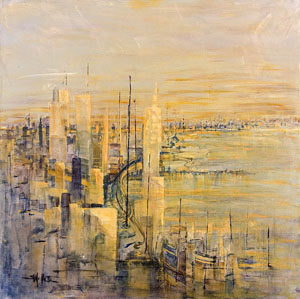
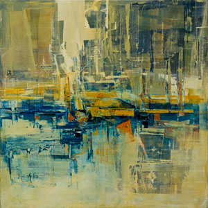
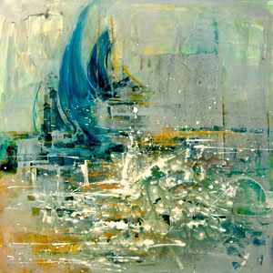

RESUME
Memberships:
- Wisconsin Visual Artists
- Wisconsin Regional Artists Association
- Sauk County Art Association – Board Member
Printed Work:
- Lake Shore Drive,
Cover Art for “The Point” Issue Two, Winter 2010
732 S. Financial Place
Chicago, Illinois 60605
A bi-annual, international publication
-
Veridian Homes, showcasing their interiors and featuring the works "Outside the Studio" and "Backyard Garden" in
Madison Magazine and The Wisconsin State Journal, 2016
Exhibits:
- Wisconsin Regional Art Association, Division of Continuing Studies, University of Wisconsin,
Madison: Ada Biddick Award for painting excellence, 2011
- Museum of Wisconsin Art, West Bend, WI
October-December 2011
- Wisconsin Regional Art Association, Madison: State Exhibit Award, 2011
- Sauk County Art Association: Juried, Awarded Best in Show 2010 and 2014
- Wisconsin Visual Art Exhibit, University of Wisconsin, Madison Pyle Center, Spring 2012, 2014
and 2015
- Blue spoon Café, Prairie du Sac, Wisconsin (yearly)
- Heritage Union, Prairie du Sac, Wisconsin
- Bindley Collection Gallery, Middleton, WI
- Visual Art Wisconsin 2012, UW-Parkside Exhibition, Sept-Oct 2012
- University of Wisconsin Hospital, Madison, WI
Main gallery 2013, 2014 and 2015
- Promega Corporation, Fitchburg, Wisconsin 2014
© 2012 Copyright Suzanne Maillette. All rights reserved.